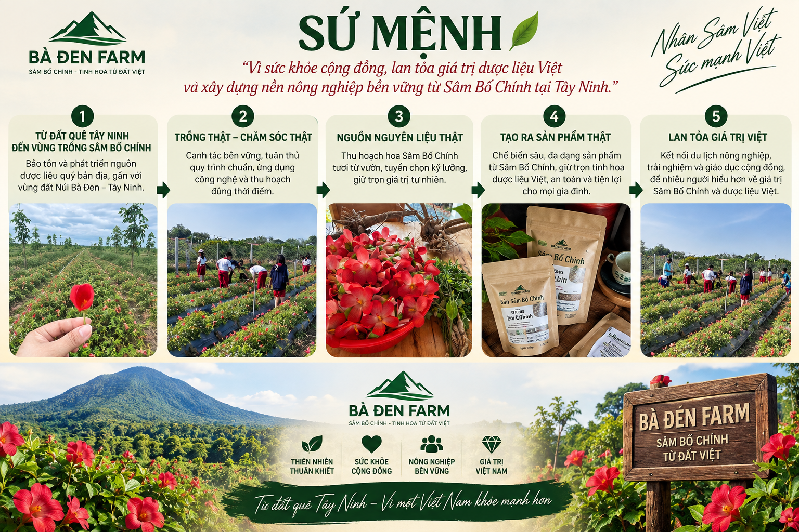
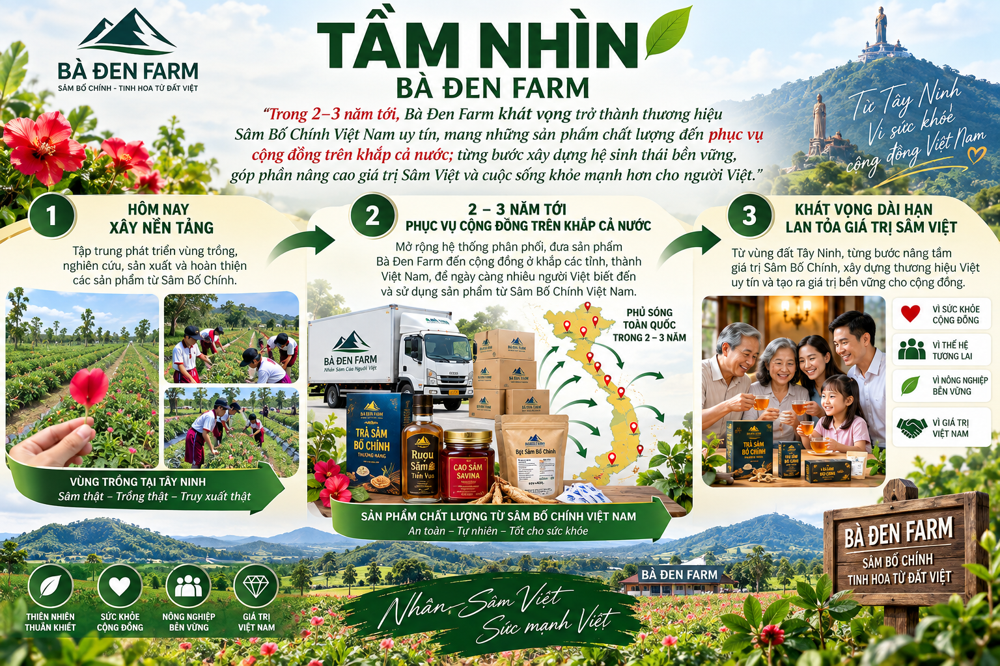
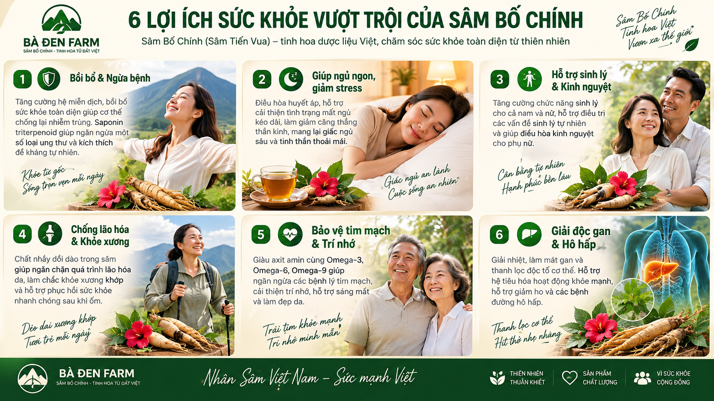
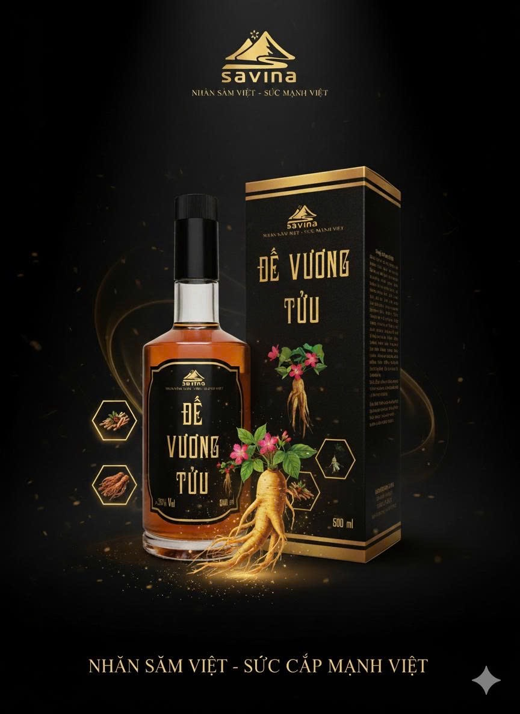

🌱
1. Vùng nguyên liệu lớn
Liên kết nuôi trồng Sâm Bố Chính quy mô lớn cùng bà con nông dân tại vùng đất Tây Ninh.
Tự hào nhân sâm Việt Nam — Sức mạnh Việt
Sâm Bố Chính (Sâm Tiến Vua) — thảo dược quý hơn 300 năm lịch sử dâng lên các Vua chúa Triều Nguyễn. Nay được nuôi trồng thành công tại Tây Ninh với mã QR truy xuất minh bạch từng củ sâm.

Sâm Bố Chính (Sâm Tiến Vua) được phát hiện hơn 300 năm trước tại Quảng Bình, từng được chọn dâng Vua chúa Triều Nguyễn. Từ lâu, cây Sâm Bố Chính đã được vinh danh là vị thuốc quý đặc biệt trong cuốn sách kinh điển “Những cây thuốc vị thuốc Việt Nam” của GS. Đỗ Tất Lợi.
Chứa hợp chất quý giá Saponin triterpenoid cùng nhiều Vitamin và Axit Amin thiết yếu, Sâm Bố Chính giúp tăng lực, chống suy nhược và bồi bổ sức khỏe toàn diện. Công ty CP Bà Đen Farm đã nghiên cứu nuôi trồng thành công loại sâm quý này tại Tây Ninh, kết hợp công nghệ QR minh bạch từ gốc.

“Vì sức khỏe cộng đồng, lan tỏa giá trị dược liệu Việt và xây dựng nền nông nghiệp bền vững từ Sâm Bố Chính tại Tây Ninh.”

Bảo tồn và phát triển nguồn dược liệu quý bản địa, gắn liền với vùng đất tâm linh Núi Bà Đen – Tây Ninh.
Canh tác bền vững, tuân thủ quy trình chuẩn VietGAP, ứng dụng công nghệ hiện đại và thu hoạch đúng thời điểm tối ưu dược tính.
Thu hoạch hoa và củ Sâm Bố Chính tươi trực tiếp từ vườn, tuyển chọn kỹ lưỡng, giữ trọn vẹn giá trị tự nhiên thuần khiết.
Chế biến sâu, đa dạng dòng sản phẩm từ Sâm Bố Chính (Trà, Rượu, Bột, Cao, Sấy lát), giữ trọn tinh hoa dược liệu Việt, an toàn cho mọi gia đình.
Kết nối du lịch nông nghiệp, trải nghiệm và giáo dục cộng đồng, đưa Sâm Bố Chính vươn tầm thế giới (Nhật Bản, Hàn Quốc, Mỹ, Châu Âu).
“Trong 2–3 năm tới, Bà Đen Farm khát vọng trở thành thương hiệu Sâm Bố Chính Việt Nam uy tín, mang những sản phẩm chất lượng đến phục vụ cộng đồng trên khắp cả nước; từng bước xây dựng hệ sinh thái bền vững, góp phần nâng cao giá trị Sâm Việt và cuộc sống khỏe mạnh hơn cho người Việt.”

Tập trung phát triển vùng trồng Sâm Bố Chính công nghệ cao tại Tây Ninh, nghiên cứu chuyên sâu, sản xuất và hoàn thiện các dòng sản phẩm chất lượng trắc tuyệt.
Mở rộng hệ thống phân phối, đưa sản phẩm Bà Đen Farm đến cộng đồng ở khắp các tỉnh, thành Việt Nam, để ngày càng nhiều người Việt biết đến và sử dụng sản phẩm Sâm Việt.
Từ vùng đất Tây Ninh, từng bước nâng tầm giá trị Sâm Bố Chính, xây dựng thương hiệu Việt uy tín, vươn tầm quốc tế và tạo ra giá trị bền vững cho cộng đồng.
Thước phim tư liệu truyền hình & TVC giới thiệu quy trình nuôi trồng, chế biến vị thuốc quý Tiến Vua hơn 300 năm lịch sử tại chân núi Bà Đen.
Tọa lạc ngay cạnh núi Bà Đen — ngọn núi cao nhất Đông Nam Bộ với khung cảnh thiên nhiên thơ mộng, Nhà hàng Ẩm thực Sâm Bà Đen là điểm dừng chân lý tưởng cho du khách khi ghé thăm Tây Ninh. Chúng tôi chuyên phục vụ các món ăn bổ dưỡng kết hợp độc đáo giữa Sâm Bố Chính tươi và đặc sản Nam Bộ như: Lẩu sâm, Bánh bao sâm, Dược tửu sâm Bà Đen.
Đến với Bà Đen Farm, du khách và các đoàn học sinh sinh viên (tiêu biểu như Tập đoàn Giáo dục IGC) không chỉ được tham quan vùng trồng sâm công nghệ cao, tự tay trải nghiệm hái hoa sâm tươi tại vườn mà còn được hướng dẫn chế biến món Bánh bao sâm độc đáo, thưởng thức bữa ăn bổ dưỡng và giao lưu trao quà kỷ niệm.


Sâm Bố Chính (Sâm Tiến Vua) sở hữu hàm lượng dưỡng chất quý giá như Saponin, chất nhầy Mucin tự nhiên, các axit amin và Omega 3, 6, 9 hỗ trợ chăm sóc sức khỏe toàn diện.

Tăng cường hệ miễn dịch, bồi bổ sức khỏe toàn diện giúp cơ thể chống lại nhiễm trùng. Saponin triterpenoid giúp ngăn ngừa một số loại ung thư và kích thích đề kháng tự nhiên.
Điều hòa huyết áp, hỗ trợ cải thiện tình trạng mất ngủ kéo dài, làm giảm căng thẳng thần kinh, mang lại giấc ngủ sâu và tinh thần thoải mái.
Tăng cường chức năng sinh lý cho cả nam và nữ, hỗ trợ điều trị các vấn đề sinh lý tự nhiên và giúp điều hòa kinh nguyệt cho phụ nữ.
Chất nhầy dồi dào trong sâm giúp ngăn chặn quá trình lão hóa da, làm chắc khỏe xương khớp và hỗ trợ phục hồi sức khỏe nhanh chóng sau khi ốm.
Giàu axit amin cùng Omega-3, Omega-6, Omega-9 giúp ngăn ngừa các bệnh lý tim mạch, cải thiện trí nhớ, hỗ trợ sáng mắt và làm đẹp da.
Giải nhiệt, làm mát gan và thanh lọc độc tố cơ thể. Hỗ trợ hệ tiêu hóa hoạt động khỏe mạnh, hỗ trợ giảm ho và các bệnh đường hô hấp.
Liên kết nuôi trồng Sâm Bố Chính quy mô lớn cùng bà con nông dân tại vùng đất Tây Ninh.
Sở hữu xưởng sản xuất Trà, Bột sâm & Xưởng ngâm ủ Rượu sâm đạt tiêu chuẩn chất lượng cao.
Hệ thống phân phối phủ sóng Tây Ninh, TP.HCM, Đà Lạt, Pleiku, Phan Thiết, Nha Trang, Cần Thơ, Vĩnh Long, Kiên Giang...
Nhà hàng chuyên ẩm thực Sâm Bố Chính phục vụ & quảng bá du khách toàn quốc khi ghé thăm Tây Ninh.
Công nghệ đứng sau từng củ sâm, biến niềm tin thành điều có thể kiểm chứng.
Dùng camera điện thoại quét QR in trên bao bì sản phẩm.
Hiện lô trồng, khu vực, nhật ký chăm sóc, ngày gieo & ngày thu hoạch.
Xem các chứng nhận OCOP 3★, VietGAP gắn với chính củ sâm đó.
Chăm sóc sức khỏe toàn diện từ 100% nguyên liệu Sâm Bố Chính Tiến Vua nuôi trồng tại Tây Ninh. Nhấp "Xem dược tính" để khám phá chi tiết thành phần khoa học từ Brochure chính thức.

100% Thân, Rễ, Lá & Củ Sâm Bố Chính
Trà thảo dược giàu Saponin & Mucin tự nhiên. Vị ngọt thanh lưu lâu ở cổ họng, giải nhiệt mát gan & bồi bổ cơ thể hàng ngày.

Khử độc tố Aldehyde/Methanol · Không đau đầu
Xử lý Điện Từ Trường 2-3h đằm thắm như ngâm hạ thổ nhiều năm. Phối hợp Sâm Bố Chính, Ashwagandha & Đẳng Sâm bổ sinh lực.

Phối hợp 3 loại Sâm Quý: Bố Chính + Ashwagandha + Đẳng Sâm
Giúp bồi bổ khí huyết, giảm đau mỏi xương khớp, tăng cường thể lực và dưỡng tâm an thần hiệu quả cho người trung niên.

100% Củ Sâm Tươi Sấy Lạnh Bảo Toàn Kháng Thể
Dồi dào Mucin (377.8mg/g) trơn khớp, kích thích Collagen trẻ hóa da, phục hồi cơ thể sau bệnh & phẫu thuật.

Công Nghệ Sấy Lạnh & Nghiền Siêu Mịn
Bảo toàn 100% Saponin (15.2mg/g) & Mucin. Dễ dàng pha nước uống, pha sinh tố hoặc hầm canh bổ dưỡng.

Chiết Xuất Cô Đặc Từ Củ Sâm Tươi
Hàm lượng dược tính cô đặc gấp nhiều lần, giúp chống mệt mỏi, phục hồi thể lực và hỗ trợ người bệnh ăn ngon ngủ sâu.

Hoa Sâm Tiến Vua + Đông Trùng + Táo Đỏ + Kỷ Tử
Chứa Glycine, Histidine & Lysine giúp an thần ngủ ngon, chống lão hóa da, cải thiện sinh lý & phòng ngừa gan nhiễm mỡ.
Nguyên Liệu Lẩu Sâm Cao Cấp Chuẩn Vị Nhà Hàng
Sâm Bố Chính sấy lát phối hợp thảo mộc thanh ngọt. Cho nước lẩu bổ dưỡng, thanh nhiệt và bồi bổ thể lực gia đình.
Bà Đen Farm tiếp tục phát triển sản phẩm Nước giải khát sâm Bố Chính & Gia vị hầm sâm chuẩn hóa cho thị trường nội địa & xuất khẩu.

Mỗi lô trồng được quản lý bằng mã lô riêng: khu vực, ngày gieo, diện tích, giống và người phụ trách. Toàn bộ hoạt động chăm sóc — bón phân, tưới nước, kiểm tra sâu bệnh — đều được ghi nhật ký kèm hình ảnh hiện trường.
* Nội dung minh họa — thay bằng phản hồi thật khi triển khai.
"Quét QR thấy rõ ngày thu hoạch và chứng nhận nên rất yên tâm khi mua biếu bố mẹ."
"Làm đại lý ở Tây Ninh, chính sách chiết khấu và công nợ rõ ràng, đặt hàng tiện."
"Sản phẩm có nguồn gốc rõ ràng, tư vấn nhiệt tình, giao hàng đúng hẹn."
Chiết khấu theo cấp đại lý, công nợ minh bạch theo sổ cái, cổng đại lý riêng để đặt hàng và theo dõi doanh số. Cùng phát triển thị trường sâm dược liệu chính hãng.
Sâm Bố Chính (Sâm Tiến Vua) là thảo dược quý giàu Saponin được phát hiện cách đây 300 năm tại Quảng Bình, từng dùng dâng tiến các Vua chúa Triều Nguyễn. Nay được Bà Đen Farm tiên phong nuôi trồng thành công tại Tây Ninh.
Năm 2022, sản phẩm đạt chứng nhận OCOP 3 sao tỉnh Tây Ninh và Trà túi lọc Sâm Bố Chính đạt chứng nhận Sản phẩm công nghiệp nông thôn tiêu biểu cấp khu vực.
Nhà hàng phục vụ các món ăn bổ dưỡng độc đáo chế biến từ Sâm Bố Chính kết hợp cùng đặc sản địa phương Tây Ninh, mang đến trải nghiệm dinh dưỡng thực tế cho du khách.
Mỗi sản phẩm có mã QR riêng. Quét QR sẽ thấy lô trồng, nhật ký chăm sóc, ngày thu hoạch và chứng nhận của chính củ sâm đó.
Đăng ký qua form bên dưới. Chính sách đại lý minh bạch: chiết khấu theo cấp, công nợ ghi sổ cái rõ ràng, có cổng đại lý riêng để đặt hàng và theo dõi.
Để lại số điện thoại hoặc nhắn Zalo/Messenger, đội ngũ tư vấn sẽ liên hệ xác nhận đơn. Hình thức thanh toán COD hoặc chuyển khoản.
Để lại thông tin, đội ngũ Bà Đen Farm sẽ liên hệ tư vấn trong thời gian sớm nhất.